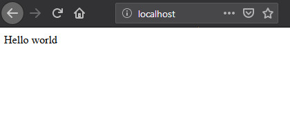

4. [Training] - Ansible¶
To understand how BlueBanquise works, it is essential to learn basis of Ansible.
This section tries to provide key knowledge to at least be able to manipulate and edit the stack to your needs.
Note that if you are new to cluster management system administration, a full manual tutorial is available on github.
4.1. Install Ansible¶
There are multiple ways to install Ansible. Everything is described on the main Ansible documentation
If you wish only to learn Ansible, simplest way is to use pip (or pip3)
If you wish to install Ansible on a production system, use your operating system packages manager.
4.2. Minimal inventory¶
Now that Ansible is installed on your system, edit /etc/hosts file, and add “management1” on localhost line:
127.0.0.1 localhost localhost.localdomain localhost4 localhost4.localdomain4 management1
::1 localhost localhost.localdomain localhost6 localhost6.localdomain6
Then, create some needed directories and files:
mkdir /etc/ansible/inventory
mkdir /etc/ansible/inventory/group_vars
mkdir /etc/ansible/inventory/group_vars/all
mkdir /etc/ansible/roles
mkdir /etc/ansible/playbooks
And edit /etc/ansible/ansible.cfg line to fix /etc/ansible/inventory as default inventory folder:
[defaults]
inventory = /etc/ansible/inventory
Also set, in this same file /etc/ansible/ansible.cfg, the roles_path value to /etc/ansible/roles:
roles_path = /etc/ansible/roles
Finally, add management1 host into the inventory. Create a file called /etc/ansible/inventory/myhost.yml with the following content:
management1
Our very basic Ansible configuration is done. But one thing remains: we need to ensure our host (management1) can ssh to itself without password, as Ansible relies fully on the ssh to connect to remote hosts.
Let’s generate a ssh key (press enter multiple time):
ssh-keygen -N ""
Ensure you can ssh on management1 using a password:
[root@management1 ]# ssh management1
The authenticity of host 'management1 (10.10.0.1)' can't be established.
ECDSA key fingerprint is SHA256:XXXXXXXXXXXXXXXXXXXXXXXXXXXXXXXXXXXXXXXX
ECDSA key fingerprint is MD5:XXXXXXXXXXXXXXXXXXXXXXXXXXXXXXXXXXXXXXX.
Are you sure you want to continue connecting (yes/no)? yes
Warning: Permanently added 'management1,10.10.0.1' (ECDSA) to the list of known hosts.
root@management1's password:
[root@management1 ~]#
If ok, then deploy ssh public key to allow password less authentication, and ensure you can now ssh with the key:
[root@management1 ~]# ssh-copy-id management1
/usr/bin/ssh-copy-id: INFO: Source of key(s) to be installed: "/root/.ssh/id_rsa.pub"
root@management1's password:
Number of key(s) added: 1
[root@management1 ~]# ssh management1
[root@management1 ~]#
Finally, check Ansible can connect to management1, and report hosts is up:
[root@management1 ~]# ansible all -m ping
management1 | SUCCESS => {
"changed": false,
"ping": "pong"
}
[root@management1 ~]#
Let’s see the available and useful commands now.
4.3. Ansible commands¶
4.3.1. ansible¶
The ansible command provides few interesting features.
4.3.1.1. Version¶
First command is to check current Ansible version. It should be >= 2.9.13:
ansible --version
4.3.1.2. Ping an host or all hosts¶
Use the following command to check if Ansible can contact a specific registered host:
ansible management1 -m ping
Or all hosts:
ansible all -m ping
Also, it is possible to gather facts. Facts are dynamic variables, accessible only when Ansible is running on the target. Facts provides live information about the target: it’s running kernel, it’s Linux distribution, network or cpu information, etc.
ansible -m setup --tree /dev/shm/ management1
Then, open file /dev/shm/management1 to check its content and the result of facts gathering.
4.3.2. ansible-inventory¶
Ansible inventory command is extremely useful and will be massively used on this documentation.
This command allows to gather information from your inventory and check the expected output.
4.3.2.1. Groups and hosts¶
The command:
ansible-inventory --graph
Provide information about groups and hosts inside each group:
@all:
|--@ungrouped:
| |--management1
It is possible to see here that management1 is member of group @ungrouped, which is part of group @all. More will be seen later in this documentation.
4.3.2.2. Host variables¶
To output variables for a specific host, and check for example your variable precedence mechanism provided what is expected, use:
ansible-inventory --yaml --host management1
For now, there are no available variables in the inventories, so output will be {}.
4.3.3. ansible-playbook¶
This command is used to run playbooks, and ask Ansible to execute tasks on desired host(s). This is the most used command when using BlueBanquise.
Important parameters are:
-e or –extra-vars, which allows to provide additional variables for execution (keep in mind that variables set here win the whole precedence)
-t or –tags, which allows to execute only specific tasks or part of tasks (seen later)
-s or –skip-tags, which allows to not execute some specific tasks or part of tasks (seen later)
–list-tasks, which allows to list all tasks related to roles used in the playbook, and order they will be executed
–start-at-task, which allows to start/restart playbook at a desired task (to be combined with –list-tasks)
–list-tags, which allows to list all tags seen during this playbook execution
–limit, which limit the playbook execution to a specific list of hosts (if using a group has default host for example)
4.3.4. Debug¶
All of these commands accept verbose flags with -v, -vv, -vvv, etc. The more v, the more verbose.
Also, it is possible to execute all of them with the variable ANSIBLE_DEBUG=1 set, which will dramatically increase output information (but unfortunately not always relevant to our needs…).
For example, a very verbose execution would be:
ANSIBLE_DEBUG=1 ansible -m ping management1 -vvv
4.4. Variables and groups¶
Now that all important commands have been seen, it is time to add some variables inside the inventory, and play with groups.
4.4.1. Adding variables¶
We are going to add few variables, at different positions in the inventories.
Create file /etc/ansible/inventory/group_vars/all/my_ship.yml with the following content:
destination: Deliani
my_ship:
model: USP Talon Light Fighter
price: 6000 # in cr
equipment:
generator: Advanced MicroFusion
shield: Structural Integrity Field
front_gun: Pulse-Cannon
sidekicks:
- Plasma Storm
- Zica SuperCharger
Now, ensure management1 can see these variables:
[root@ ~]# ansible-inventory --yaml --host management1
destination: Deliani
my_ship:
equipment:
front_gun: Pulse-Cannon
generator: Advanced MicroFusion
shield: Structural Integrity Field
sidekicks:
- Plasma Storm
- Zica SuperCharger
model: USP Talon Light Fighter
price: 6000
[root@ ~]#
Nice, we can now use these variables for management1 when working on it.
Let’s add 2 other hosts: login1 and nfs1.
Edit file /etc/ansible/inventory/myhost.yml to obtain:
management1
login1
nfs1
And now let’s check login1 (when will exist) can also access these variables:
[root@ ~]# ansible-inventory --yaml --host login1
destination: Deliani
my_ship:
equipment:
front_gun: Pulse-Cannon
generator: Advanced MicroFusion
shield: Structural Integrity Field
sidekicks:
- Plasma Storm
- Zica SuperCharger
model: USP Talon Light Fighter
price: 6000
[root@ ~]#
Perfect. It is time to play with groups, before coming back to variables to work on variables precedence.
4.4.2. Configuring groups¶
Lets check current groups:
[root@ ~]# ansible-inventory --graph
@all:
|--@ungrouped:
| |--login1
| |--management1
| |--nfs1
[root@ ~]#
All our hosts belong to the ungrouped group and to the all group. But we want to be able to assign specific variables to each kind of equipment. We need to create groups.
There are two ways to create groups. In YAML, directly in the hosts files, or using specific Ansible syntax in separate files. Both are useful, and we will combine them.
4.4.2.1. In YAML¶
Edit again the /etc/ansible/inventory/myhost.yml file, and this time let’s use real YAML:
master:
hosts:
management1:
slaves:
hosts:
login1:
nfs1:
Now, let’s check again groups:
[root@ ~]# ansible-inventory --graph
@all:
|--@master:
| |--management1
|--@slaves:
| |--login1
| |--nfs1
|--@ungrouped:
[root@ ~]#
We can see that management1 is now member of group master, and that login1 and nfs1 are member of group slaves.
The special string hosts in this file define that the string above is a group, and that strings bellow are hosts member of this group.
It is also possible to set groups in a group in this same file. Edit it again:
my_nodes:
children:
master:
hosts:
management1:
slaves:
hosts:
login1:
nfs1:
And result:
[root@ ~]# ansible-inventory --graph
@all:
|--@my_nodes:
| |--@master:
| | |--management1
| |--@slaves:
| | |--login1
| | |--nfs1
|--@ungrouped:
[root@ ~]#
The children string define that the string above is a group that contains bellow group(s).
4.4.2.2. In Ansible syntax¶
The second way to create groups is to use the Ansible native syntax, which can be simpler in some cases.
Create a file /etc/ansible/inventory/mygroups and set the following content:
[colors:children]
blue
red
[blue]
management1
login1
[red]
nfs1
And check the result:
[root@ ~]# ansible-inventory --graph
@all:
|--@colors:
| |--@blue:
| | |--login1
| | |--management1
| |--@red:
| | |--nfs1
|--@my_nodes:
| |--@master:
| | |--management1
| |--@slaves:
| | |--login1
| | |--nfs1
|--@ungrouped:
[root@ ~]#
Same concept applies here, with different syntax.
Note that a host can be part of multiple groups.
You can find more information and examples here on intro_inventory .
4.4.3. Variables precedence¶
Time to use all these groups and make full usage of the inventory structure.
If you remember precedence system in Vocabulary section (more here on Ansible dedicated page ) group_vars/all is in position 4 in the precedence. This is where we set our spaceship variables.
Let’s say now we wish to change our ship destination for management1 node only.
Check current destination for all hosts:
[root@ ~]# ansible-inventory --yaml --host management1 | grep destination
destination: Deliani
[root@ ~]# ansible-inventory --yaml --host login1 | grep destination
destination: Deliani
[root@ ~]# ansible-inventory --yaml --host nfs1 | grep destination
destination: Deliani
[root@ ~]#
We can redefine the variable in group_vars/all (that apply to all hosts in the @all group, so everyone), but we only want to impact management1 node.
In the precedence list, you can see that inventory host_vars are in position 9, so they will win against position 4 of group_vars/all. Let’s use this.
Edit file /etc/ansible/inventory/myhost.yml and add a destination variable under management1:
my_nodes:
children:
master:
hosts:
management1:
destination: Ixmucane
slaves:
hosts:
login1:
nfs1:
And check destinations again:
[root@ ~]# ansible-inventory --yaml --host management1 | grep destination
destination: Ixmucane
[root@ ~]# ansible-inventory --yaml --host login1 | grep destination
destination: Deliani
[root@ ~]# ansible-inventory --yaml --host nfs1 | grep destination
destination: Deliani
[root@ ~]#
Perfect.
Note
We could also have used a file in inventory/host_vars/management1/new_values.. Setting a variable in the host definition file above the host is equivalent to using host_vars folder. But host_vars folder is difficult to use when having a very large number of hosts, which is why in BlueBanquise we are often using directly the host file.
Let’s say now we want to change the model of spaceship of all the slave nodes. So not a single host, but all slave members hosts.
We are going to use level 6 in variables precedence: group_vars/. Create a directory called slave (same name than the group we want to work with) in group_vars:
mkdir /etc/ansible/inventory/group_vars/slaves
Then, create file /etc/ansible/inventory/group_vars/slaves/myship.yml with the following content:
my_ship:
equipment:
front_gun: Pulse-Cannon
generator: Advanced MicroFusion
shield: Structural Integrity Field
sidekicks:
- Plasma Storm
- Zica SuperCharger
model: Gencore Maelstrom
price: 6000
And check variables of hosts:
[root@ ~]# ansible-inventory --yaml --host management1 | grep model
model: USP Talon Light Fighter
[root@ ~]# ansible-inventory --yaml --host login1 | grep model
model: Gencore Maelstrom
[root@ ~]# ansible-inventory --yaml --host nfs1 | grep model
model: Gencore Maelstrom
[root@ ~]#
Note
We had to add the whole dictionary in group_vars/slaves/myship.yml. This is due to the replace hash_behaviour of Ansible, as the merge version is deprecated. If you wish to avoid having to replace all variables like here, try to avoid massive dictionaries when not needed.
Perfect. Remember the pizza in Vocabulary section. Ansible just flatten the whole inventory, using precedence, and you obtain variables.
Last point for this part, remember that in variable’s precedence, extra_vars is level 22 and always win, so adding extra vars when executing Ansible later will allow us to force variables at execution time for testing purposes or just because we need it.
4.5. Roles and playbooks¶
Time to apply some configuration on our target host.
We are going to create a role that install a web server package, create a very basic web page with our ship’s information, and start the web server service.
4.5.1. Role¶
Create a role called “shipyard”, with needed folders:
mkdir /etc/ansible/roles/shipyard
mkdir /etc/ansible/roles/shipyard/tasks
mkdir /etc/ansible/roles/shipyard/templates
Tasks folder contains tasks to perform, and main.yml file inside will be the starting point for Ansible. Templates folder will contain our templates (configuration files) in Jinja2 language.
4.5.1.1. Task¶
Create file /etc/ansible/roles/shipyard/tasks/main.yml with the following content:
---
- name: Package
package:
name: httpd
state: present
- name: Template >> /var/www/html/index.html
template:
src: index.html.j2
dest: /var/www/html/index.html
owner: root
group: root
mode: 0644
tags:
- templates
- name: Start services
service:
name: httpd
state: started
enabled: yes
Content is pretty simple:
Ansible installs httpd package (or do nothing if present)
Then Ansible render the template index.html.j2 and write the result in /var/www/html/index.html
Then Ansible ensure httpd service is started and enabled at boot
You can find all Ansible modules here in the official documentation.
4.5.1.2. Template¶
Templates are probably the key feature of Ansible and all automation tools.
The idea is simple: you provide Ansible with a copy of your desired configuration file, with variables to be dynamically replaced in order to fill on the fly some parts of the file.
Let’s do this with a simple html page, and first with a static page.
Create the template /etc/ansible/roles/shipyard/templates/index.html.j2 with the following static content:
<html>
<header>
<title>This is title</title>
</header>
<body>
Hello world
</body>
</html>
The current template is static, we will make it dynamic later.
4.5.2. Playbook¶
Lets create our playbook, which will contains a list of roles to apply on management1 host.
Create file /etc/ansible/playbooks/myplaybook.yml with the following content:
---
- name: myplaybook
hosts: "management1"
roles:
- role: shipyard
tags: shipyard
Simply put, target of the playbook is host management1, and role to apply is shipyard.
Skip the tags for now.
Note
Hosts can be a list of hosts (comma separated: management1,login1,nfs1), or a group of hosts (all, slaves, color, etc.).
Now, execute the playbook, and let Ansible do its job:
ansible-playbook /path/to/myplaybook.yml
Note that you need to provide full path to the playbook, as there are no default folder for playbooks in Ansible. Also note that if your shell is currently in the playbook folder, you can skip full path as relative path are accepted.
If all goes well, you should now have the file /var/www/html/index.html generated on management1, and using a web browser you can check the result.
Note that if you cannot reach the web browser, for example you are working in a VM or a server without screen attached, you can use ssh forwarding. From you current computer, open a new terminal and use:
ssh root@my_vm_or_my_server -L 9999:localhost:80
And then open a local web browser and open http://localhost:9999 . Check the web for more on ssh port forwarding.
But this is not very interesting, let’s add some dynamic part into our template.
4.5.3. Jinja2¶
Edit file /etc/ansible/roles/shipyard/templates/index.html.j2 to make it this way:
<html>
<header>
<title>Shipyard</title>
</header>
<body>
<h1>I am {{inventory_hostname}} << this is me, the current target</h1>
<h2>Variables access</h2>
Ship list: {{groups['all']}} << this is an access to a group members list <br>
management1 ship model: {{hostvars['management1']['my_ship']['model']}} << this is an access to an host specific variable <br>
login1 ship model: {{hostvars['login1']['my_ship']['model']}} <br>
nfs1 ship model: {{hostvars['nfs1']['my_ship']['model']}} <br>
My ship model: {{hostvars[inventory_hostname]['my_ship']['model']}} <br>
Or a better way to get my ship model: {{my_ship.model}} <br>
<h2>Loops</h2>
{% for ship in groups['all'] %}
Ship {{ship}} is in the shipyard, and has destination {{hostvars[ship]['destination']}}. <br>
{% endfor %}
</body>
</html>
And let’s re-execute the playbook. But we have already installed the package and started the service, so let’s ask Ansible to only work on the tags ‘templates’ to fasten the execution (this tag was defined in the tasks/mail.yml file previously seen):
ansible-playbook myplaybook.yml -t templates
And check again our web page.

You can see multiple things:
We executed the task on management1, so inventory_hostname variable content is ‘management1’. This is an Ansible reserved variable that contains the target hostname.
groups[‘mygroup’] allows to get a list with all the hosts member of the group.
hostvars[‘myhost’] allows to access variables of this host, using the variable precedence mechanism.
hostvars[inventory_hostname] is equivalent to a direct variables access has we are accessing our current target variables.
Now regarding to Jinja2:
{{ }} allows to insert a variable in the destination file.
{% %} are Jinja2 instructions (for, if, etc.).
{# #} are Jinja2 commentaries.
The remaining is put in the destination file “as is”.
You can experiment with this template to understand the whole mechanism. The whole Jinja2 documentation can be found here: Jinja2 template designer
You should now understand the very basis of Ansible.
Please note also that Ansible provides some built in filters, to be used with Jinja2. A list can be found here: Ansible Filters
Time to investigate tasks advanced elements.
4.5.4. Task again¶
As discussed before, all task available modules can be found in the Ansible modules documentation .
Each of these modules can be combined with general tasks actions. But first, let’s define the basic debug module and registers, that will allow us to play more easily with tasks.
At this point, use previously created task, or create a new role to add following tasks.
4.5.4.1. Debug module¶
This is a very simple module, to display a message in the shell.
For example:
- name: My message module
debug:
msg: "Hello world ! I am the debug module. You will use me a lot."
You can also display variables this way:
- name: My message module
debug:
msg: "Hello world ! I am host {{ inventory_hostname }}"
4.5.4.2. Registers¶
Create a file /tmp/valkyrie, and add the string “lenneth” inside, using:
echo "lenneth" > /tmp/valkyrie
Now, lets use a register to gather this content. Registers are a way to gather data about executed modules. Input data, output data, etc. A good usage example is combining registers with templates. Register can inform later tasks that a template was updated or not, and trigger other tasks if needed.
One of the possible usages is registers combined with shell or commands, to gather very specific data from the system.
Try:
- name: Get output from a shell command
shell: "cat /tmp/valkyrie"
register: my_result
ignore_errors: True
- name: Display content of the register
debug:
msg: "{{ my_result }}"
And when running, output is:
TASK [debug : Get output from a shell command] *******************************
changed: [management1]
TASK [debug : My message module] *********************************************
ok: [management1] =>
msg:
changed: true
cmd: cat /tmp/valkyrie
delta: '0:00:00.016261'
end: '2020-04-17 14:46:04.490684'
failed: false
rc: 0
start: '2020-04-17 14:46:04.474423'
stderr: ''
stderr_lines: []
stdout: lenneth
stdout_lines:
- lenneth
So, you can use the register to get status (changed: true, so something happens), to get return code (rc: 0 here), stderr and stdout, if it failed, etc.
For example:
- name: My message module
debug:
msg: "{{ my_result.stdout }}"
Will display “lenneth”.
We are going to use register and debug module to learn generic tasks actions.
4.5.4.3. Loops¶
It is possible to make modules iterate. All possibilities are available here in loop documentation .
BlueBanquise rely on two methods: with_items and loop. with_items is considered deprecated by the Ansible team. loop, the replacement, is progressively being added into the stack.
A first loop example can be:
- name: My message module
debug:
msg: "Values: {{ item }}"
loop:
- Blue
- Red
- Green
- Yellow
This will execute this module 4 times, with each time an element of the list given as item. When using loops in ansible, the variable item stores the value of the current loop index.
It is also possible to provide the loop with a list from the inventory, like the one we wrote before:
- name: My message module
debug:
msg: "Values: {{ item }}"
loop: "{{ my_ship.equipment.sidekicks }}"
Loop action can accept advanced filters or patterns. Refer to the Ansible documentation.
with_items works the same way:
- name: My message module
debug:
msg: "Values: {{ item }}"
with_items:
- Blue
- Red
- Green
- Yellow
- name: My message module
debug:
msg: "Values: {{ item }}"
with_items: "{{ my_ship.equipment.sidekicks }}"
4.5.4.4. Conditionals¶
Conditionals are used to skip some modules when not required or optional (or just don’t meet a specific condition). All information can be found in conditionals documentation .
Let’s re-use our previous register, and display a message only if content is “lenneth”:
- name: Get output from a shell command
shell: "cat /tmp/valkyrie"
register: my_result
ignore_errors: True
- name: Display content of the register
debug:
msg: "Profile"
when:
- my_result.stdout == "lenneth"
If content is not “lenneth”, you will see:
TASK [debug : Display content of the register] *******************************
skipping: [management1]
So this part of the task was skipped, because our my_result.stdout does not meet the condition.
Now, let’s combine loop and conditions.
Fill /tmp/valkyrie file with multiple lines:
echo "freya" > /tmp/valkyrie
echo "lenneth" >> /tmp/valkyrie
echo "odin" >> /tmp/valkyrie
echo "loki" >> /tmp/valkyrie
We are now going to use the stdout_lines of our register, as it is a list containing line by line the output of stdout, so here the content of our file.
- name: Get output from a shell command
shell: "cat /tmp/valkyrie"
register: my_result
ignore_errors: True
- name: Display content of the register
debug:
msg: "Profile"
loop: "{{my_result.stdout_lines}}"
when:
- item == "lenneth"
And result should be:
TASK [debug : Display content of the register] *******************************
skipping: [management1] => (item=freya)
ok: [management1] => (item=lenneth) =>
msg: Profile
skipping: [management1] => (item=odin)
skipping: [management1] => (item=loki)
Note that all the items are displayed here.
Last part is to combine conditions. It is possible to stack conditions, considering that the list is interpreted as AND conditions by Ansible.
For example:
- name: Get output from a shell command
shell: "cat /tmp/valkyrie"
register: my_result
ignore_errors: True
- name: Display content of the register
debug:
msg: "Profile"
loop: "{{my_result.stdout_lines}}"
when:
- item == "lenneth"
- sys_admin_is_master == "yes" # <<< this is added as an AND with other conditions
Now execute playbook with an additional variable as extra vars, first with “no”, then with “yes”:
ansible-playbook ... -e sys_admin_is_master=no
ansible-playbook ... -e sys_admin_is_master=yes
First time, you get:
TASK [debug : Display content of the register] *******************************
skipping: [management1] => (item=freya)
skipping: [management1] => (item=lenneth)
skipping: [management1] => (item=odin)
skipping: [management1] => (item=loki)
And second time:
TASK [debug : Display content of the register] *******************************
skipping: [management1] => (item=freya)
ok: [management1] => (item=lenneth) =>
msg: Profile
skipping: [management1] => (item=odin)
skipping: [management1] => (item=loki)
So it acted as a logical AND.
4.5.4.5. Tags¶
Tags act like the name: they tag part of the task, or role, so you can execute only this part, or skip it.
For example:
- name: Display content of the register
debug:
msg: "Les sanglots longs"
tags:
- first
- name: Display content of the register
debug:
msg: "des violons de l'automne"
tags:
- second
And at execution, use --tags first,second to execute both, --tags second
to execute second only, or --skip-tags first that will skip the first one.
4.5.4.6. Notify¶
Sometime, you may wish that some actions take place at the end of each role, if a module returned a changed status. Best example: your role is dedicated to a service, and Ansible generate the configuration file using a template. You may want that this service is restarted if Ansible detect changes in the file when executing.
Notify will be your friend for such cases.
Create a new directory at root of your role, called handlers, and then inside a file called main.yml, with the following content:
- name: There was a change
debug:
msg: "THE FILE WAS CHANGED!! HOW DARE YOU!!"
Note that the name of this task (There was a change) is important and will
be targeted by the notify.
Create also a template, called our_file.j2 in templates folder (like handlers above), with the following content:
{{ my_value }}
Now, in the main task, use this code:
- name: Display message
debug:
msg: "Hello world"
- name: Template /tmp/out
template:
src: "our_file.j2"
dest: /tmp/out
owner: root
group: root
mode: 0644
notify: There was a change
- name: Display another message
debug:
msg: "Hello world again. How do you do by the way ?"
And execute adding an extra var:
ansible-playbook ... -e my_value=kirk
First time execution, of course, you will see both:
TASK [debug : Template /tmp/out] *********************************************
changed: [management1]
...
RUNNING HANDLER [debug : There was a change] *********************************
ok: [management1] =>
msg: THE FILE WAS CHANGED!! HOW DARE YOU!!
As expected, because there was a change, so the handler was called at the end of the role.
Now do the exact same command again.
TASK [debug : Template /tmp/out] *********************************************
ok: [management1]
Handler was not activated, because there was no changes.
Last test, change captain of the enterprise (Kirk is on a mission).
ansible-playbook ... -e my_value=spock
And again:
TASK [debug : Template /tmp/out] *********************************************
changed: [management1]
...
RUNNING HANDLER [debug : There was a change] *********************************
ok: [management1] =>
msg: THE FILE WAS CHANGED!! HOW DARE YOU!!
Handler was activated.
4.5.4.7. Other useful modules¶
A full list of all Ansible modules can be found on the Ansible documentation .
However, lets review the most commonly used modules:
4.5.4.7.1. Package¶
This module simply installs a list of packages. It can be used instead of the yum or dnf modules, as it covers both.
Example:
- name: Install wget package
package:
name: wget
state: present
- name: Install a list of packages
package:
name: "{{ my_packages_list }}"
state: present
4.5.4.7.2. Service¶
Manage services, to start/stop/restart, enable/disable.
Example:
- name: Start and enable httpd service
service:
name: httpd
enabled: yes
state: started
4.5.4.7.3. File¶
This module allows to create folders.
Example:
- name: Create custom folders
file:
path: "{{ item }}"
state: directory
mode: 0755
loop:
- /etc/my_folder
- /var/lib/my_other_folder
4.5.4.7.4. Copy¶
Act like template, but simply copy file, no rendering. Files to be copied must be put into a files folder, at root of the role.
For example, create file my_role/files/slurm.conf
- name: Copy slurm static file
copy:
src: slurm.conf
dest: /etc/slurm/slurm.conf
mode: 0644
owner: slurm
group: slurm
4.5.4.7.5. Lineinfile¶
This module allows to manipulate files, using regex. For example, set a value to 0 in a file.
Example:
- name: Add mymanagement string to localhost in /etc/hosts
lineinfile:
path: /etc/hosts
regexp: '^127\.0\.0\.1'
line: 127.0.0.1 localhost mymanagement
4.5.4.7.6. Include_vars¶
Allow to include vars from a file. Mostly used to allow compatibility with multiple architectures / OS versions, etc. To be used when “defaults” cannot be used. Vars file must be placed in a dedicated vars folder at root of the role (myrole/vars/myvars.yml).
Example:
- name: Include vars from file "myvars.yml"
include_vars: myvars.yml
4.5.4.7.7. Include_tasks¶
Allows to split the main.yml task file into multiple chunks (using or not conditionals).
Example:
- name: Include addon tasks
include_tasks: addon.yml
when: my_role_addon == true
4.5.4.7.8. Command and shell¶
Sometime, you need to do things manually. Two modules allows that: command and shell.
Command is to be used when you need to execute a very basic command.
Shell is to be used when you need to execute a command inside a shell (to benefit from it).
When using pipes, or output redirections, shell is preferred for example.
- name: Store content of a file into a register
command: cat /etc/myfile
register: myfile_content
- name: Execute a script, pipe it, and stdout goes to log.txt on the remote host
shell: myscript.sh | grep -E "in|out">> log.txt
You can find a lot more on the web regarding Ansible. However, this small guide should have provided you the very basis of Ansible.
If you feel something is missing in this quick Ansible training, please do not hesitate to ask us to add elements.
Time to move on to BlueBanquise stack itself, and bootstrap first management server.